Date: 12/28/17.
Using Morse Theory, we were able to get information about a CW-structure on the loop space of a smooth manifold \(M\). Namely, we put a complete Riemannian metric on \(M\), choose two points that are non-conjugate along any geodesics, and count the geodesics between the points with their index. Then Morse Theory tells us that the loop space \(\Omega M\) has the homotopy type of a CW-complex with a \(\lambda \)-cell for each geodesic of index \(\lambda \). In particular cases, such as that of the sphere, we can use this information to compute the homology of the loop space. For \(S^n\), we have a geodesic of index \(k(n-1)\) for each \(k\geq 0\), so if \(n\geq 3\), then by cellular homology, the (\(\ZZ \)) homology of the loop space is \(\ZZ \) for dimensions \(k(n-1)\), and \(0\) elsewhere.
The Serre spectral sequence gives an algebraic way of computing this. Given a fibration \(F \hookrightarrow E \to B\), the Serre spectral sequence allows one (under nice conditions) to compute the homology of the total space \(E\) in terms of the homology of the fibre \(F\) and base space \(B\). The particular fibration that we are interested in is the path space fibration: if \(X\) is a pointed space, with \(PX\) the path space, and \(\Omega X\) the loop space, then we have a fibration \(\Omega X \hookrightarrow PX \to X\), given by sending a path \(\gamma \) to its end point \(\gamma (1)\). The Serre spectral sequence would give us a way of computing the homology of \(PX\) from that of \(\Omega X\) and \(X\), but we already know the homology of \(PX\), since it is contractible. Thus we would like to work backwards through the Serre spectral sequence, and do some detective work to figure out the homology of \(\Omega X\) in terms of that of \(X\).
I will now say some generalities about spectral sequences on the homology of spaces. First some remarks: everything here can be dualized to cohomology, and homology here will be with coefficients in an arbitrary group \(G\).
Given a space \(X\) that is filtered, meaning that it is the union of spaces \(X_p, p \in \ZZ \) with \(X_p \subset X_{p+1}\), we would like to compute its homology using this filtration. First, the filtration on \(X\) yields a filtration on its homology, namely \(H_{n,p}(X) = \im (i^*:H_n(X_p) \to H_n(X))\). This filtration of \(H_n(X)\) yields the associated graded group \(\bigoplus H_{n,p}(X)/H_{n,p-1}(X)\) which is isomorphic to \(H_n(X)\) if for example the coefficients are in a field, \(X_p\) is empty for small enough \(p\), and \(X_p\) induces isomorphism on \(H_n\) for sufficiently large \(p\). The last two conditions are satisfied if \(X\) is a CW-complex, and \(X_p\) is the \(p\)-skeleton, which is an example of a filtered space we want to keep in mind. If the coefficients are not in a field, the associated graded group is isomorphic to homology “modulo extensions” meaning that differences that arise are due to \(H_n(X)\) being a nontrivial extension of the \(H_{n,p}(X)/H_{n,p-1}(X)\). The spectral sequence on the homology of this filtration, will under some conditions be able to compute this associated graded group.
To begin with the construction of the spectral sequence, we first look at the exact sequences of a pair for each of the pairs \((X_p,X_{p-1})\), and put all this data together. Namely, we can let \(E\) be \(\bigoplus _{p,q} H_{p+q}(X_p,X_{p-1})\), and \(A\) be \(\bigoplus _{p,q} H_{p+q}(X_p)\). Then for the exact sequence of a pair below:
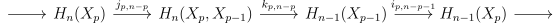
We can bundle all of the \(i,j,k\)s together to get an exact triangle called an exact couple.
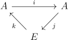
An exact couple comes with a natural differential on \(E\), namely \(d = kj\), which is a differential since \(dd = k(jk)j = k(0)j = 0\). Note in the case \(X_p\) is the \(p\)-skeleton, \(d\) coincides with the differential on cellular homology. Given an exact triangle, we can produce another exact couple, called the derived couple as follows: \(A^2 = i(A)\), and \(E^2\) is the homology of \(E\) with respect to \(E\). \(i^2\) and \(k^2\) (not to be confused with \(ii\) or \(kk\)) will be the same as \(i\) and \(k\), and \(j^2\) will be defined by \(j^2(ia) = j(a)\). A diagram chase shows the derived couple is well-defined and exact.
Now we can iterate what we have just done. We get a sequence \(E^r,d^r\) where \(E^r\) is the homology of \(E^{r-1}\) with respect to the differential \(d^{r-1}\) (\(E = E^1,d = d^1\)). This is called a spectral sequence. We can think of each \(E^r\) as a page in a book, and as we compute the homology of \(E^r\), we turn the page and write the result \(E^{r+1}\) on the next page.
We would like to say that our spectral sequence converges to the associated graded group, meaning that eventually, the differentials will become \(0\), and the resulting stable group \(E^\infty \) will be the associated graded group. However, in order for this to be true we need some conditions on our spectral sequence. Recall that our \(E\) and \(A\) are really bigraded as \(E_{p,q} = H_{p+q}(X_p,X_{p-1})\) and \(A_{p,q} = H_{p+q}(X_p)\). Thus each of the successive \(E^r,A^r\) also is bigraded, but because of the definition of the derived couples, the differential \(d^r\) changes grading as \(r\) changes. In particular, \(d^r\) sends \(E^r_{p,q}\) to \(E^r_{p-r,q+r-1}\).
The first assumption we want to make will be on the \(A_{p,q}\). \(i\) is a map from \(A_{p-1,q+1}\) to \(A_{p,q}\), and the condition that we want (Condition \(1\)) is that for fixed \(p+q\), \(i\) is an isomorphism on all but finitely many terms (we can say “almost always an isomorphism”). In terms of homology, this means that for fixed \(n\), the inclusion \(H_n(X_p) \to H_n(X_{p+1})\) is almost always an isomorphism. By exactness, this is the same as saying that \(E_{p,q}\) is nonzero on finitely many terms for a fixed \(p+q\). We see that the differential \(d^r\) is then \(0\) for large enough \(r\) since \(E^r_{p,q}\) is a subquotient of \(E_{p,q}\) (i.e. a quotient of a subgroup), so we get that each \(E^r_{p,q}\) stabilizes to some \(E^\infty _{p,q}\). Similarly, the groups \(A_{p,q}\) stabilize for fixed \(p+q\) as \(p\) gets very small or very large. For \(n = p+q\), We will call \(A_n^+\) the stable group for \(p\) very large, and \(A_n^-\) the stable group when \(p\) gets very small.
The second condition we want (Condition \(2\)) will guarantee that our spectral sequence converges to the associated graded group. This is the condition that \(A_n^- = 0\) for all \(n\).
The exact sequence for the \(r^{th}\) derived couple looks like
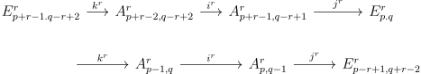
But by Condition \(1\), the first and last term are \(0\) for large \(r\), and by Condition \(2\), the last two \(A\) terms are \(0\), since \(A^r_{p,q}\) is the image of the iterated inclusion \(i_r:A_{p-r,q+r}\to A_{p,q}\), which is \(0\) for large \(r\). This we get \(E^\infty _{p,q} \cong A^r_{p+r-1,q-r+1}/\im (i:A^r_{p+r-2,q-r+2} \to A^r_{p+r-1,q-r+1})\) for large \(r\). However, looking at the definitions of the terms on the right hand side of the isomorphism, we see that if \(F_{p,q} = \im (i_\infty : A_{p,q} \to A^+_{p+q})\), then \(E^\infty _{p,q} \cong F_{p,q}/F_{p-1,q+1}\). In our particular case, \(F_{p,q}\) is \(H_{p+q,p}(X)\), so we get the proposition below.
Proposition 3.1. If \(X_p\) is a filtration of \(X\) such that for a fixed \(n\), the inclusion \(H_n(X_p) \to H_n(X_{p+1})\) is almost always an isomorphism and \(H_n(X_p) = 0\) for small \(p\), then the spectral sequence on homology converges to the associated graded group.
For an intuitive discussion of where spectral sequences come from see Chow’s article [Cho06].
The Serre spectral sequence is what we get when specialize the spectral sequence on homology to a certain filtration on the total space of a fibration. We can see it as the homology (or cohomology) analog of the exact sequence on homotopy groups.
The reason it is nice is that there is an explicit formula for \(E^2\), so we can start computing from the second page. In an ideal situation, the computation will be completely formal, and we will be able to deduce \(E^\infty \).
For a fibration \(F \hookrightarrow E \xrightarrow{\pi } B\), with \(B\) a CW-complex, let \(B_p\) be the \(p\)-skeleton of \(B\), and \(E_p\) be \(\pi ^{-1}(B_p)\). Then \(E_p\) will be our filtration of \(E\). It is not too hard to see that the conditions of Proposition 3.1 are satisfied. Indeed, the pair \((B_{p+1},B_p)\) is \(p\)-connected, so by the homotopy lifting property so is the pair \((E_{p+1},E_p)\). Then by the Hurewicz theorem, we get that \(H_n(E_{p+1},E_p)\) is almost always \(0\), so Condition \(1\) holds. Condition \(2\) is satisfied by the fact that \(B_p\) is the empty set for \(p<0\).
Recall for a fibration, there is a functor from the fundmental groupoid \(\Pi _1(B)\) to the naive homotopy category \(\hTop \), which takes a path \(\gamma \) to the homotopy equivalence it induces on the fibres \(\pi ^{-1}(\gamma (0)) \to \pi ^{-1}(\gamma (1))\). This functor, when restricted to a particular base point, gives an action of \(\pi _1(B)\) on the mapping class group (i.e. group of homotopy equivalences) of the fibre \(F\), which we can denote \(\MCG (F)\). The condition for the formula for \(E^2\) to hold is for this action to be trivial.
Theorem 4.1. Let \(F \hookrightarrow E \xrightarrow{\pi } B\) be a fibration with \(B\) path-connected, and \(\pi _1(B)\) acting trivially on \(\MCG (F)\). Then there is a spectral sequence \(E^r_{p,q},d^r\), with \(d^r:E^r_{p,q} \to E^r_{p-r,q+r-1}\), converging to \(E^\infty _{p,q} \cong F_{p,q}/F_{p-1,q+1}\), where \(F_{0,n} \subset F_{1,n-1} \subset \dots F_{n,0} = H_n(E;G)\) is a filtration of \(H_n(E;G)\). Moreover, \(E^2_{p,q} \cong H_p(B;H_q(F,G))\).
The only thing so far unproven is the last statement, the proof of which one can find in Hatcher’s notes [Hat04]. Note that \(B\) has not been assumed to be a CW-complex above, this is because one can assume WLOG that \(B\) is a CW-complex by pulling back a CW approximation \(B' \to B\). Indeed, by naturality of the long exact sequence on homotopy groups and the five lemma, \(E',B'\) will be weakly homotopy equivalent to \(E, B\) via the pullback maps. By naturality of the action of the fundamental group on \(\MCG (F)\), \(\pi _1(B')\) will act trivially on the fibre as well, so that it suffices to prove the theorem for \(E' \to B'\).
We can consider the special case \(E = B \times F\), with \(\pi \) the projection. Here, \(B\) does act trivially on the fibre, so we can compare what we get from the Serre spectral sequence and from the Künneth formula. The Künneth formula with the universal coefficient theorem give \(H_n(B \times F;G) \cong \bigoplus _{p+q = n} H_p(B;H_q(F;G))\), which is what the spectral sequence yields when \(E^2 = E^\infty \), and all differentials are \(0\). Thus for a nontrivial fibration with fibre \(F\), \(H_n(B\times F)\) is an upper bound for \(H_n(E)\), since differentials being nonzero will only make homology smaller, as will nontrivial extensions.
To draw the Serre spectral sequence, first recall how it was described earlier, namely, each \(E^r\) a page in a book. For the Serre spectral sequence, the \(E_{p,q}\) is only nonzero for \(p,q \geq 0\), since \(E_{p,q} := H_{p+q}(E_p,E_{p-1})\), which we have already noted is \(p-1\)-connected. Thus we can write each \(E^r\) as a table going infinitely upwards and to the right, where the \(p+1^{th}\) column and \(q+1^{th}\) row is \(E^r_{p,q}\). Since \(d^r\) goes from \(E^r_{p,q}\) to \(E^r_{p-r,q+r-1}\), the differential on the \(r^{th}\) page goes \(r\) columns left and \(r-1\) columns up. For example, part of the \(E^2\) page looks like this:
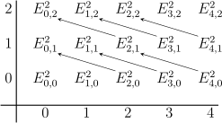
where the arrows are \(d^2\).
Let’s try a simple example with \(\ZZ \) coefficients to see how the spectral sequence works. We will consider the Hopf fibration \(S^1 \hookrightarrow S^3 \rightarrow S^2\). \(S^2\) is simply connected, so the conditions of Theorem 4.1 are satisfied. Then the \(E^2\) page looks like
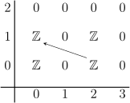
Everything on the page not shown above is \(0\). Since \(E^3 = E^ \infty \) here as there are only two adjacent nonzero rows, and since we already know the homology of \(S^3\), we must have that the only possible nonzero differential must be an isomorphism.
Without actually examining the maps, one cannot compute the homology of \(S^3\) using this fibration. In fact, from the transitive action of \(SO(3) \cong \RR \PP ^3\) on \(S^2\), we get a similar fibration \(S^1 \hookrightarrow SO(3) \rightarrow S^2\), so the \(E^2\) page of this fibration looks the same, except in this case, the map \(\ZZ \to \ZZ \) is multiplication by \(2\).
Here are some examples, a few of which are inspired from Hatcher’s notes [Hat04].
Lets try our motivating example: the loop space of a sphere. For \(n > 1\), \(S^n\) is simply connected so the conditions of Theorem 4.1 are again satisfied. \(E^2_{p,q} = H^p(S^n,H^q(\Omega S^n))\), so the only nonzero columns are the \(p = 0, n\) columns, in which case \(E^2_{p,q} = H^q(\Omega S^n)\) by the universal coefficients theorem. We see thus that the only page with possibly nonzero differentials is the \(E^{n-1}\) page, so \(E^{n-1}_{p,q} = E^2_{p,q}\), and \(E^n = E^\infty \). Part of the \(E^{n-1}\) page is shown below:
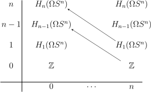
Since the homology of \(PS^n\) is trivial except for the \(\ZZ \) at \(H_0\), everything on the \(E^{n-1}\) page (except \(E^{n-1}_{0,0}\)) must be exact, so all the maps \(H_{i}(\Omega S^n) \to H_{n+i-1}(\Omega S^n)\) for each \(i\) are isomorphisms, so \(H_{k(n-1)}\Omega S^n = \ZZ \) for \(k \geq 0\), and is \(0\) elsewhere.
In that example, we used the homology of the base space and total space to find out the homology of the fibre. The example of \(K(\ZZ ,2)\)’s path space fibration is one in which we can use the homology of the total space and fibre to find the homology of the base space. The loop space is a \(K(\ZZ ,1)\), which is homotopy equivalent to \(S^1\). \(\pi _1(K(\ZZ ,2)) = [S^1,K(\ZZ ,2)] = H^2(S^1;\ZZ ) = 0\), so this fibration satisfies the conditions of Theorem 4.1. This time, by looking at \(H_*(S^1,\ZZ )\), we see the only nonzero rows are the \(q = 0,1\) rows, which are shown below.
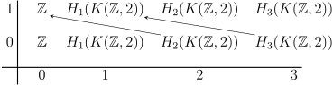
As in the previous example, the \(E^2\) page is almost exact (i.e. except for on the \(E^2_{0,0}\) term) so we get \(H_i(K(\ZZ ,2)) \cong \ZZ \) for even \(i\), and is \(0\) elsewhere. This agrees with the fact that \(\CC \PP ^\infty \) is a \(K(\ZZ ,2)\).
Let’s try computing the homology of some classical groups.
\(\SU (3)\) acts transitively on \(S^5\), with stabilizer \(\SU (2) \cong S^3\), giving us the fibration \(S^3 \hookrightarrow \SU (3) \to S^5\). It is easy to see that the differentials are always \(0\) because there are never any maps from nonzero groups to nonzero groups, so the homology matches that of the product; namely it is \(\ZZ \) in dimensions \(0,3,5,8\), and \(0\) elsewhere.
Another example to try is \(\SOr (4)\), with the fibration \(\RR \PP (3) \cong \SOr (3) \hookrightarrow \SOr (4) \to S^3\). In this case only potentially \(E^3\) can have nontrivial differential, and it is shown below:
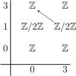
But \(\ZZ \) is torsion free, so all differentials are \(0\), and \(H_*(\SOr (4)) = H_*(\Spin (3)\times \SOr (3))\) which agrees with the fact that these are actually homeomorphic (but not isomorphic).
There are cases in which the conditions of Theorem 4.1 are not satisfied. For example, for a normal covering space, we have the fibration \(\Aut (E/B) \hookrightarrow E \to B\), where \(\Aut (E/B)\) is the group of deck transformations. If \(E\) is a nontrivial cover of \(B\), then \(E\) corresponds to a subgroup \(H\) of \(\pi _1(B)\), and the action of the \(\pi _1(B)\) on \(\Aut (E/B)\) is the action of \(\pi _1(B)\) on the left cosets \(\pi _1(B)/H\), which is nontrivial. Indeed we should hope that the Serre spectral sequence fails in this case. For example, if \(G\) is a discrete group, and we were able to apply the Serre spectral sequence to the fibration \(G \hookrightarrow EG \to BG\), where \(EG\) is contractible, we would get that \(BG\) has trivial homology, whereas group homology and cohomology are known to be quite nontrivial.
One of the reasons cohomology is nicer than homology is its ring structure. The cohomology analog of the Serre spectral sequence is much more powerful than the homology version, as we can deduce more from the cup product. For example, we could have tried to compute the homology of \(\SU (n)\) as we did \(\SU (3)\), via the fibration \(\SU (n-1) \hookrightarrow \SU (n) \to S^{2n-1}\) and induction, but it would have let to issues that don’t easily resolve. However the computation for cohomology does go through with the use of the additional cup product structure.
Theorem 7.1. Let \(F \hookrightarrow E \xrightarrow{\pi } B\) be a fibration with \(B\) path-connected, and \(\pi _1(B)\) acting trivially on \(\MCG (F)\). Then there is a spectral sequence \(E^r_{p,q},d^r\), with \(d^r:E^r_{p,q} \to E^r_{p+r,q-r+1}\), converging to \(E^\infty _{p,q} \cong F_{p,q}/F_{p-1,q+1}\), where \(F_{0,n} \subset F_{1,n-1} \subset \dots F_{n,0} = H^n(E;R)\) is a filtration of \(H^n(E;R)\). Moreover, \(E^2_{p,q} \cong H^p(B;H^q(F,R))\).
Moreover, there is a bigraded ring structure on each \(E^r\), given by bilinear maps \(E^r_{p,q}\times E^r_{s,t} \to E^r_{p+s,q+t}\) satisfying the properties below:
Notice that the differential’s arrows on each page point in the opposite direction for the cohomology spectral sequence. Let’s try the example of \(\SU (n)\) again. By induction, we want to prove the cohomology ring is the exterior algebra \(\Lambda [w_1,w_3,\dots ,w_{2n-1}]\) where the subscript of the \(w_i\) are the grading. The only columns of \(E\) that are nonzero are \(p = 0, 2n-1\), so the only page with potentially nonzero differential is the \(2n-2\) page. Below is shown the generators for \(E^{2n-1}\).
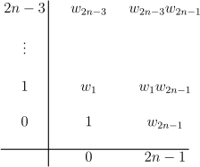
However on this page the maps from each generator go to \(0\), so all differentials are \(0\), and we are done.
Essentially the same computation can yield the cohomology rings of \(\Sp (n), \U (n)\) via induction and the fibrations \(\Sp (n-1) \hookrightarrow \Sp (n) \to S^{4n-1}\) and \(\U (n-1) \hookrightarrow \U (n) \to S^{2n-1}\). We get that \(H^*(\Sp (n),\ZZ )\) is \(\Lambda [w_3,w_7,\dots ,w_{4n-1}]\), and \(H^*(\U (n))\) is \(\Lambda [w_1,w_3,\dots ,w_{2n-1}]\).
The computation doesn’t go through the same way for \(\SOr (n-1) \hookrightarrow \SOr (n) \to S^{n-1}\) since there are maps from generators to nonzero groups on the \(E^{n-1}\) page, some of which do end up being nonzero as seen by looking at \(\SOr (3) \cong \RR \PP ^3\)’s cohomology.
The last computation we can try is the rational cohomology of \(K(\ZZ ,n)\) via the path space fibration \(K(\ZZ ,n-1) \hookrightarrow PK(\ZZ ,n) \to K(\ZZ ,n)\). We already know what it is for \(n = 1,2\), and by induction we’d like to show for even \(n\) it is \(\QQ [x_n]\), and odd \(n\) it is \(\Lambda _\QQ [x_n]\) (i.e. the exterior algebra) for \(x_n \in H^n(K(\ZZ ,n);\QQ )\).
To see this, when \(n\) is even, only the \(q = 0,n-1\) rows are nonzero, so only the \(E^{n}\) page can have nonzero differential. This page is shown below:
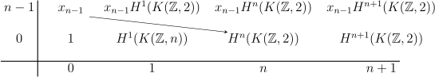
As usual for a path space fibration with one nontrivial \(d^j\), everything except \(E^n_{0,0}\) is exact, so letting \(x_n\) be the image of \(x_{n-1}\) from the arrow above, we get that \(x_n^k\) generates \(H^{nk}(K(\ZZ ,n))\), and that cohomology is otherwise \(0\). Note that this is dual to the computation done for \(H_*(K(\ZZ ,2))\).
Now let’s look at \(n\) odd, where we will see why the computation only works over a field. Here, there are plenty of n rows, namely the \(q = k(n-1)\) row for each \(k\). However, what happens to the higher powers of \(x_{n-1}\) is determined by \(x_{n-1}\) by property \((1)\). In particular, only the \(E^{n}\) page can have nonzero differential, and so is as usual almost exact. It is shown below.
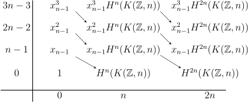
By exactness, the map \(x_{n-1} \to H^n(K(\ZZ ,n))\) must be an isomorphism. We can call \(x_n\) the image of \(x_{n-1}\). By property \((1)\), \(d^{n}(x_{n-1}^k) = k x_{n-1}^{k-1} x_n\), so the maps from each of the \(x^k_{n-1}\) are isomorphisms (this is where we would have had trouble with \(\ZZ \) coefficients) so apart from \(x_n\), the cohomology is \(0\) by exactness.
As we have seen, the Serre spectral sequence is a quite powerful computational tool. We were able to compute the homology and cohomology of some spaces, just by knowing that they were part of some fibration, for which we knew the (co)homology of the other two spaces. For homology we had to be lucky in order for the computations to work, but via the cup product we were able to do much more powerful computations for cohomology.